Manual de GIT
Agregar usuario
Configuración a nivel global como me llamo
Para verificar configuración (git config --global user.name)
Configuración a nivel global mi correo en github
Para verificar configuración (git config --global user.email)
Almacenar credenciales GIT en caché
Puede habilitar la caché auxiliar de credenciales para los usuarios que deseen almacenar detalles de autorización mediante lo siguiente.
Si debe utilizar el asistente de credenciales, se recomienda almacenar en caché solo durante un tiempo limitado para mayor seguridad. Por ejemplo, si va a trabajar hoy usando GIT durante 1 a 4 horas pero no lo tocará durante unas semanas, establezca la caducidad en 5 horas.
Después de 5 horas, las credenciales se eliminarán, lo que protegerá su GIT.Imprimir detalles de configuración de GIT
Para confirmar los usuarios y detalles de la configuración de GIT, use el comando config –list
A menos que se especifique, Git almacena detalles en el archivo.gitconfig
Iniciar GIT
Inicia git en el directorio de trabajo.
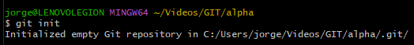Ver Status de GIT
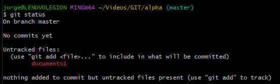Agregar un archivo al index área (stage)
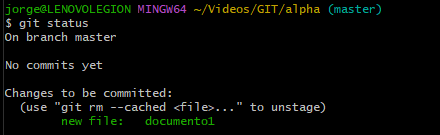Agregar todos los archivos al index área (stage)
ó 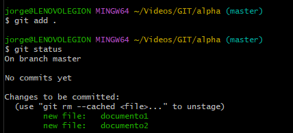Quitar archivos del index área (stage)
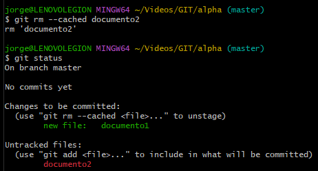Revisar cambios
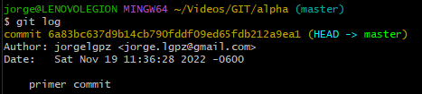Crear commit
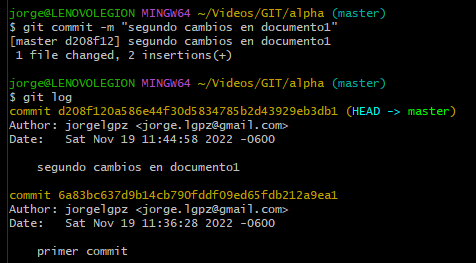Regresar a un commit anterior
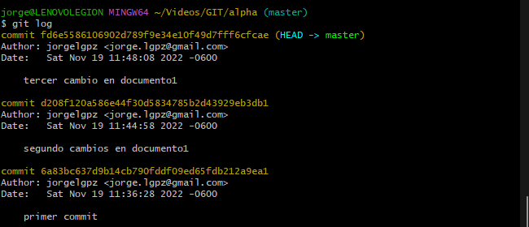
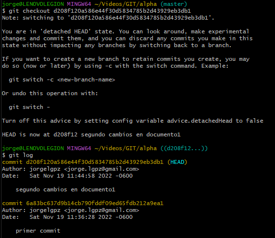Regresar al último commit
Cambiar nuevamente al último commit o cambiar al head, al master ó main(master es el último commit que se hizo)
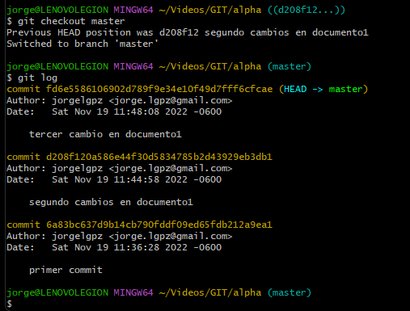Resetear suave el commit
Se va a borrar por ejemplo el tercer commit pero sin tocar los cambios ya realizados en los archivos.
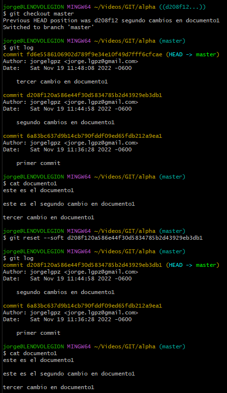Resetear duro el commit
Se va a borrar por ejemplo el segundo commit y también borra todos los cambios realizados en los archivos.
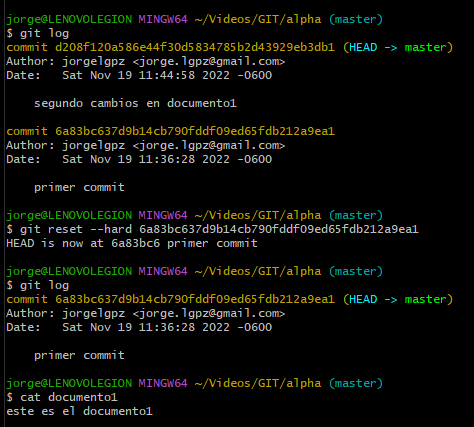Ver Ramas
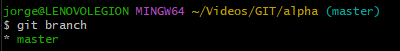Crear ramas
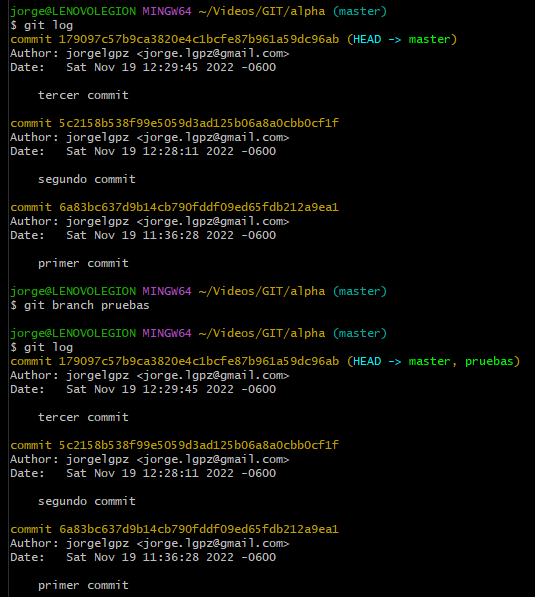Funcionar ramas
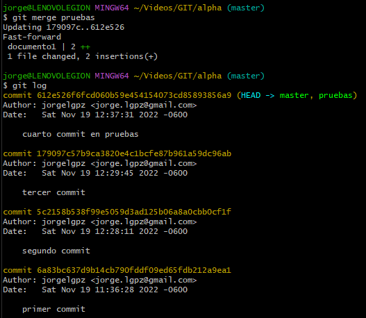Borrar ramas
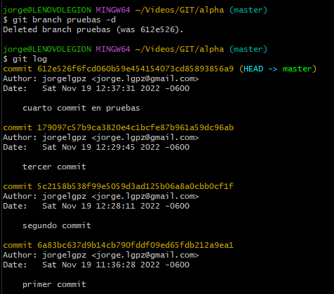Conectar Repo local a GITHUB
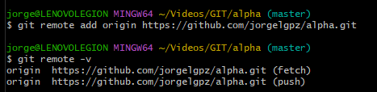Subir las ramas a GITHUB
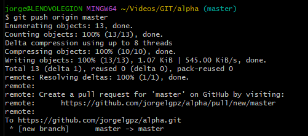 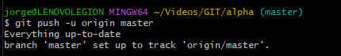Descargar cambios de GITHUB
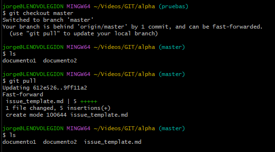ó